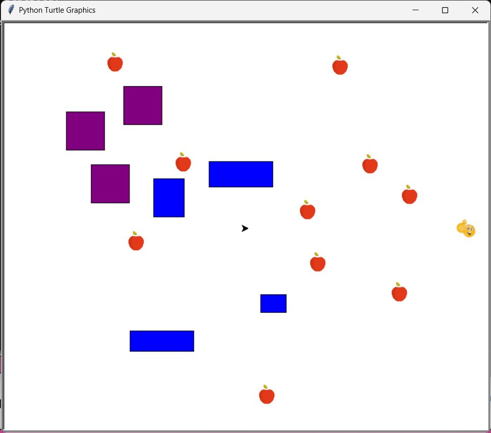
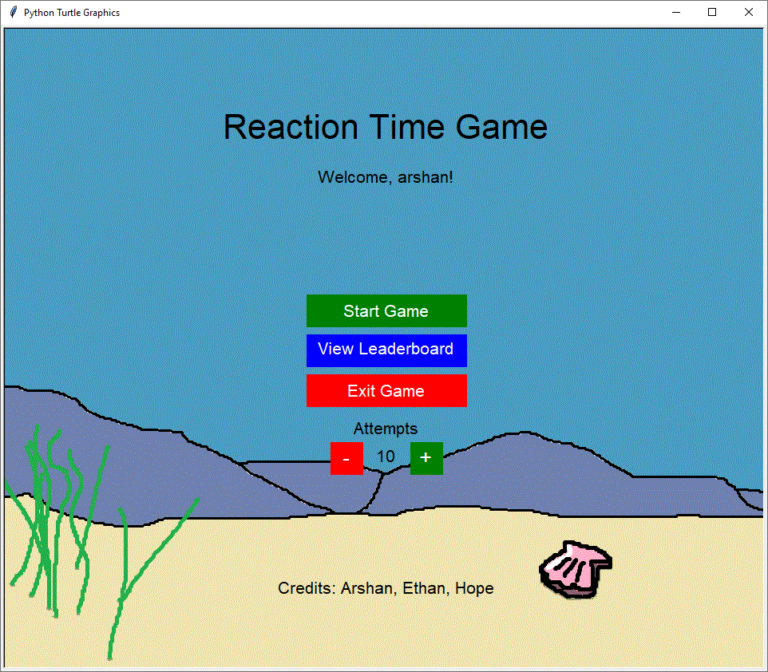
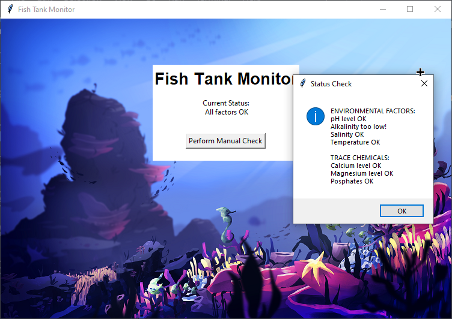
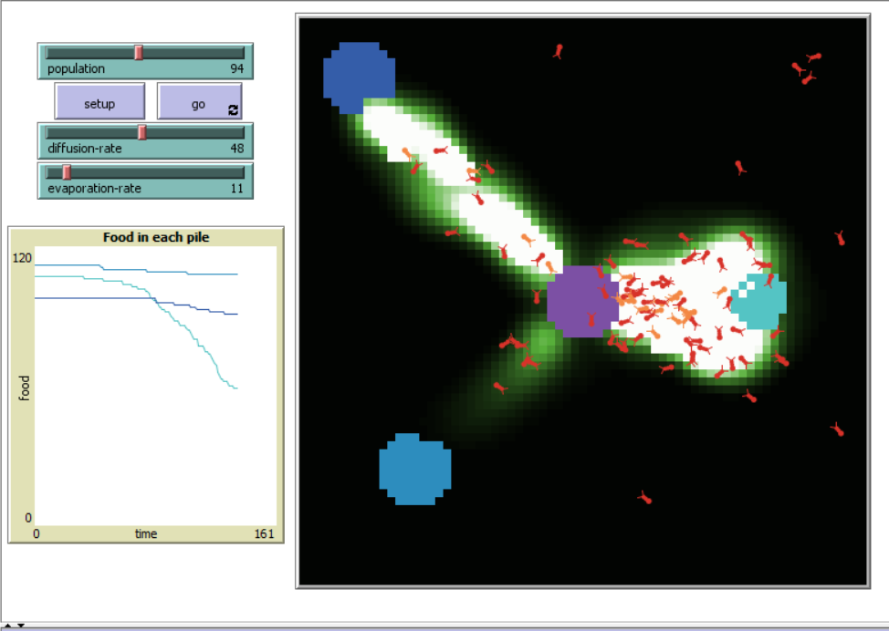
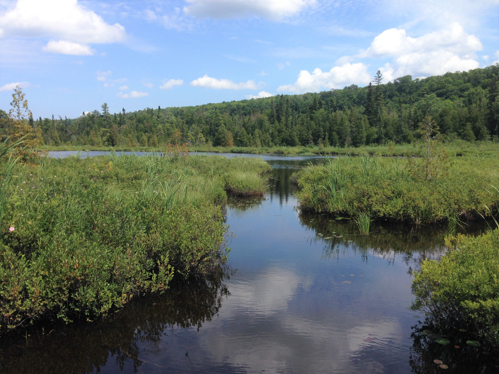

Snake Game (1.1.9 Project)

- Snake inspired snake game
- Contains interactable game elements such as a river, teleporter, and apples
- Each time the game is played, the map is randomly generated with random position and amount of elements
- Each time an apple is eaten, the "snake" gets faster and a "rocket" is spawned that follows the snake.
- If the snake hits the rocket then it dies.
- The game ends if the turtle exits the window boundaries or hits the water.
- If the snake hits a teleporter, it is teleported to a random teleporter on the map.
- Emotion of "snake" also changes based on distance from the nearest rocket. The closer it is, the more worried it gets.
Reaction Time Game (1.2.5 Project)

- Developed and finished under roughly 2 days
- A fish appears in a random position on the map
- When the fish is clicked/hit a score is determined for that specific fish
- The faster the fish clicks, the more points are awarded. The farther the fish is, the more points awarded
- Visually pleasing main menu is provided with working leaderboard
- Once 5 leaderboard positions are filled, sorting of scores begins from that point on
- Click events are used. User input is requested for the user's name
Revenge of the Cat (Scratch Project)
- The goal of the game is to collect as much cheese as possible without the cat getting you
- As the mouse (the player) you can go through walls and teleport to the opposite one, similar to holes in walls with mice
- Different difficulties and maps in the game adjust the gameplay style
- Eating cheese increases the speed of the cat
Fish Tank Monitor (PLTW 2.1.6)

- In this project, we were tasked with finding bugs and errors within a fictitious company's fish tank monitor
- Part of the project was finding possible breach points in email logs
- Other parts of the project include diagnosing/debugging errors with the software and then fixing them
- Test cases were also needed to ensure code fixes were accurate
- Below is the presentation link with the full details
Ant Simulation (PLTW 4.1.4)

- In this project, we were tasked with analysing a simulation within the NetLogo program.
- My partner and I picked an Ant Simulation because it follows a real life system.
- This simulation we picked specific shows how ants act in a colony to forage for food.
- For more details regarding the simulation view the presentation with the button below
Rover Data (Project 3.1.6)

- In this project, we were tasked with analysing raw data and converting them to sensor values within a made-up situation/scenario
- After converting the data to graphs, we inferred which graphs correlated to which sensor.
- After multiple changes in conclusions, we narrowed it down to either marshlands or forest.
- We ended with marsh lands because we didn't see any significant spikes in sound that would correlate to the forest.